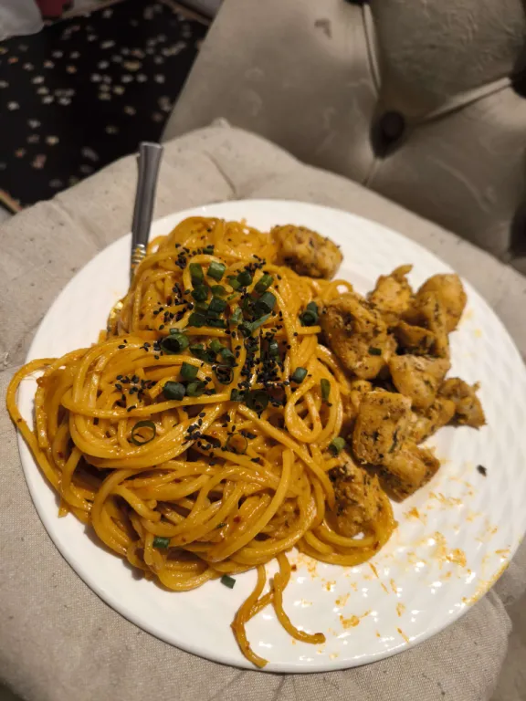

Pan fried chicken

This is the recipe I usually make when I want some meat as a side dish. It's very quick, the ingredients are simple, and it comes out very juicy and has exactly what I think is missing in other chicken recipes.
Ingredients:
- 1kg chicken breast, cubed
- ½ tbsp smoked paprika
- ½ tbsp italian herbs (when I don't have premixed, I use equal parts dried basil, oregano, rosemary, and thyme)
- ½ tbsp garlic powder
- ½ tsp salt
- ½ tsp chili flakes
- 1 tsp olive oil
Steps:
- Season cubed chicken with paprika, italian herbs, garlic powder, salt, and chili flakes.
- Add olive oil to a pan and sear chicken on medium-high heat until deeply golden on all sides, about 10-12 minutes
Home